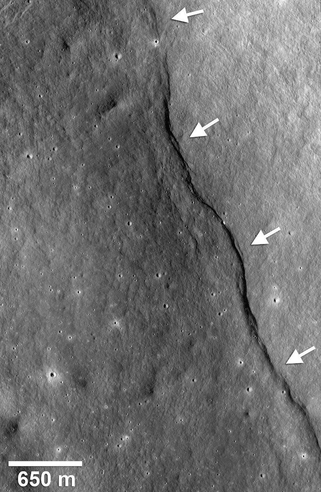

الإسراء والمعراج حادثة جرت ليلاً سنة 621م ما بين السنة الحادية عشرة إلى السنة الثانية عشرة من البعثة النبوية، يعدها المسلمون من معجزات النبي محمد، ومن الأحداث البارزة في تاريخ الدعوة الإسلامية. يؤمن المسلمون أن الله أسرى نبيه محمد على البراق مع جبريل ليلاً من المسجد الحرام بمكة، إلى بيت المقدس. وهي رحلة استهجنت قبيلة قريش حدوثها لدرجة أن بعضهم صار يصفق ويصفر مستهزئاً، ولكن النبي محمد أصر على تأكيدها وأنه انتقل بعد ذلك من القدس في رحلة سماوية بصحبة جبريل على دابة تسمى البراق أو حسب التعبير الإسلامي عرج به إلى الملأ الأعلى عند سدرة المنتهى أي إلى أقصى مكان يمكن الوصول إليهِ في السماء وعاد بعد ذلك في نفس الليلة، وسُميت سورة الإسراء على اسم الحدث، والتي افتُتحت بقوله تعالى : ﴿سُبْحَانَ الَّذِي أَسْرَى بِعَبْدِهِ لَيْلًا مِنَ الْمَسْجِدِ الْحَرَامِ إِلَى الْمَسْجِدِ الْأَقْصَى الَّذِي بَارَكْنَا حَوْلَهُ لِنُرِيَهُ مِنْ آيَاتِنَا إِنَّهُ هُوَ السَّمِيعُ الْبَصِيرُ ١﴾ [الإسراء:1].
الايه الداله علي واقعه الاسراء والمعراج وفيديو توضيحي للمعجزه/
انشقاق القمر

انْشِقَاقُ الْقَمَرِ هي إحدى معجزات النبي محمد كما ورد في المصادر الإسلامية. حدثت في مكة وقبل الهجرة النبوية عندما طلب المشركون من النبي محمد آية تدل على صدق دعوته، فانشق القمر نصفين (أو فلقتين)، فلقة على جبل أبي قبيس وفلقة على جبل قعيقعان.
يؤمن المسلمون بأن هذه الحادثة هي من علامات صدق النبي محمد التي اقترنت باقتراب الساعة، إذ ذكر في القرآن في سورة القمر: ﴿اقْتَرَبَتِ السَّاعَةُ وَانْشَقَّ الْقَمَرُ ١ وَإِنْ يَرَوْا آيَةً يُعْرِضُوا وَيَقُولُوا سِحْرٌ مُسْتَمِرٌّ ٢﴾. وانشقاق القمر دليل على اقتراب القيامة، وقد قال بعض العلماء إن القيامة إذا قامت انشقت السماء بما فيها من القمر وغيره وقيل انشقاق القمر هو انشقاق الظلمة عنه.
يرى بعض المفسرين والباحثين أن الانشقاق في القرآن يأتي بمعنى ابتعاد وانفصال الأشياء عن بعضها ولا يأتي بمعنى قسم الشيء الواحد إلى قسمين اثنين. ويستشهد هذا التفسير بنظرية أن القمر والأرض قد ظهرا معا في وقت واحد ومن جسم واحد، وعندما انشق القمر عن الأرض، تحول إلى كتلة صلبة. أما بعض الباحثين المسلمين في موضوع الإعجاز العلمي فيعتقدون أن هذه الشقوق تؤكد صدق نبي الإسلام محمد، وأنها دليل على أن القرآن نزل من عند الله، لأنه يشير إلى شقوق في القمر قبل اختراع التلسكوب، كما أنهم لجأوا للاستشهاد بالصور التي أطلقتها ناسا عن الأخاديد القمرية.
معظم المؤرخين الغربيين ينكرون وقوع هذه المعجزة محتجين إنكار القران نفسه بحدوث معجزات. ولكن في مقالة نشرت عام 2016 للدكتور توماس ووترز من متحف الطيران الوطني التابع لمؤسسة سميثسونيان شرح فيها نظريته في ان القمر ينكمش أو يتقلص؛ هذا الانكماش أدى لظهور بروز على سطح القمر نتج من اصطدام جانبي القشرة القمرية معا نتيجة لتقلص القمر.
وقد تداولت الكثير من مواقع الويب مواضيع الإعجاز العلمي وأصبحت تتداول هذه الصور على نطاقٍ واسع، رُغم تأكيد وكالة ناسا على أنَّه لا يُوجد دليلٌ على انشقاق القمر في أيّ يومٍ من الأيام في الماضي، فالأخاديد على سطحهِ هي ظاهرة طبيعيّة ناتجة عن حادث جيولوجي على القمر. كما ينكر علماء الفضاء وجود دليل علمي على حدوث انشقاق في القمر. ولكن وكالة ناسا أيضًا لم تقدم حتى اليوم تفسيرًا واضحًا لأحد أنواع الشقوق القمرية، ووصفته بأنه «مثير للجدل» و «محل خلاف».
الايه الداله علي انشقاق القمر\
القران الكريم
أما معجزة القرآن الكريم فهي معجزة عقلية، جاءت موافقة لطور الكمال البشري ونضوج الإدراك العقلي والعلمي الذي وافق عصر النبوة وما تلاه فكان كما حكى القرآن: آيات بينات في صدور الذين أوتوا العلم في قوله تعالى: "بل هو آيات بينات في صدور الذين أوتوا العلم وما يجحد بآياتنا إلا الظالمون" (العنكبوت:49).